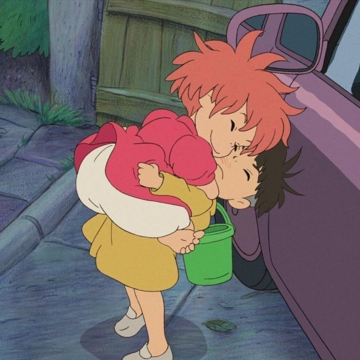

Durante una excursión prohibida para ver el mundo de la superficie, una princesa pez de colores conoce a un niño llamado Sosuke, quien le pone el nombre de Ponyo. Ponyo quiere volverse un humano, y mientras crece su amistad, ella se vuelve más humana. El padre de Ponyo la regresa al reino del océano, pero el deseo de Ponyo es tan poderoso que ella se libera, y en el proceso, derrama una colección de elixires mágicos que ponen en peligro la aldea de Sosuke.
Sosuke, un niño de cinco años, se encuentra, cuando juega en la playa, una pececita de colores llamada Ponyo, con la cabeza atascada en un tarro de mermelada.
Sosuke la rescata y le dice: No te preocupes, yo te protegeré y cuidaré de ti. Sin embargo, el padre de Ponyo, un hechicero que vive en lo más profundo del océano, la obliga a regresar con él a las profundidades del mar.
Quiero ser humana!, exclama Ponyo y, decidida a convertirse en una niña y regresar con Sosuke, escapa. Pero no va a ser fácil reunirse con Sosuke.